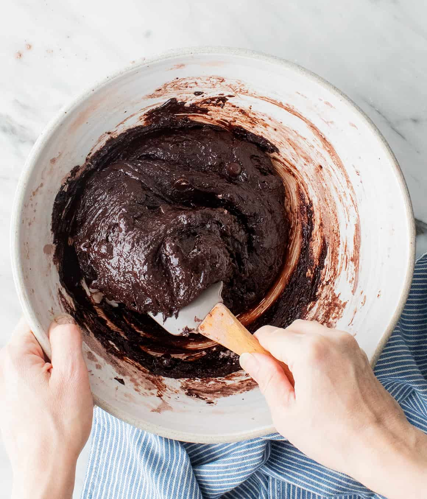

VEGETARIAN - JUMP TO RECIPE

For years, I couldn’t seem to find a recipe for brownies that met my standards. Anytime I made homemade brownies, I wanted them to be just like the ones I ate as a kid – super fudgy, moist, and chocolaty, with crispy edges and crackly tops. But the thing is, these brownies didn’t come from a recipe. We always made them from a box. Nowadays, I prefer to bake from scratch, but no brownie recipe I tried could live up to the chocolate brownies of my childhood.
So this fall, as I flipped through Michelle Lopez’s new book Weeknight Baking, her recipe for Boxed Mix Brownies, From Scratch caught my eye. Would I finally be able to make homemade brownies that would be just as delicious as the ones from a box?
The verdict: yes! I’ve had this brownie recipe on repeat since the first time I tried it. It calls for basic pantry ingredients, and it’s hardly more difficult than using a mix. As for the brownies, they’re true perfection – glossy, fudgy, and filled with rich chocolate flavor. Trust me, you’re going to want to make them ASAP!
Another thing you should do ASAP is check out Weeknight Baking! This book is packed with crave-worthy recipes that are meant for busy weeknights. Each one comes with fun variations (I have my eye on the matcha snickerdoodles) as well as tips for becoming a more efficient baker. After years of juggling a 9-to-5 job and running her blog, Hummingbird High, Michelle is full of wisdom on how to bake on a busy schedule. She writes, “We’re all doing the best we can with what we have. And I’m going to help you bake any night of the week that works for you.” If you love baking, you’ll love this book.
Homemaade Brownie Recipe Ingredients
Back to Michelle’s recipe for brownies! In order for it to turn out like (aka better than) the boxed mix, Michelle uses granulated sugar, all-purpose flour, salt, and chocolate chips. Then, she adds these key ingredients:
- 2 eggs + water – Michelle uses a bit of water with the eggs to achieve the moist, gooey texture of boxed mix brownies without any commercial emulsifiers. And because this recipe doesn’t contain any baking powder, eggs are essential for helping the brownies puff up in the oven.
- Powdered sugar – The trick to making homemade brownies that are just like ones from a box! Powdered sugar contains cornstarch, which helps thicken the batter without the chemical additives you’d find in a mix.
- Unsweetened cocoa powder – Michelle recommends using Hershey’s Special Dark Dutch-processed cocoa powder (I used Whole Foods’ 365 Cocoa Powder). Make sure to sift it if it’s lumpy!
- Oil - While many recipes for brownies use unsalted butter, Michelle’s calls for canola oil, just like the boxed mix. I use olive oil because it’s what I keep on hand, and I love the rich flavor.
- Vanilla Extract - 1/2 teaspoon vanilla really amps up the chocolate flavor.
That’s it! These fantastic homemade brownies are so easy.
How to Make Brownies from Scratch
First, mix together the dry and wet ingredients in two separate bowls. Combine the sugar, flour, powdered sugar, cocoa powder, chocolate chips, and salt in a medium bowl. Then, whisk together the eggs, olive oil, and water in a large one.

Next, combine the wet and dry ingredients. Sprinkle the dry mixture over the wet one, and fold until just combined. The batter will be thick!
Then, pour the batter into an 8×8 inch baking pan lined with parchment paper. Use a rubber spatula to spread it to all four sides of the pan and to smooth the top. The mixture will be very thick – that’s ok.

Finally, bake! Transfer the pan to a 325-degree oven and bake for 40 to 45 minutes, until a toothpick inserted comes out with a few crumbs attached. Allow the brownies to cool completely before slicing and serving. Enjoy!
Store any leftovers in an airtight container at room temperature for up to 3 days. They also freeze well for up to a month. Last time I made these, I doubled the recipe and stored the second batch in the freezer. It was so fun to have them on hand for a quick and easy dessert or afternoon treat!


Best Brownie Recipe Tips
- Better chocolate chips = better brownies. In her book, Michelle writes that one of the biggest secrets to making great brownies is using large, good-quality chocolate chips. She recommends Ghiradelli’s 60% Cacao Bittersweet Baking Chips, while I love Enjoy Life’s Dark Chocolate Morsels. Either brand would fantastic in this recipe!
- It’s better to pull them out too early than to leave them in too long. No one likes dry brownies, so err on the side of caution when you’re making this recipe. Bake them until a toothpick inserted comes out with just a few crumbs attached. If you’re on the fence, go ahead and take them out of the oven. They’ll continue to firm up as they cool!
- Wait for them to cool. Try your best to resist eating these guys straight out of the oven. Letting them cool makes them gooier and fudgier, and they’ll be less likely to crumble when you slice them. Plus, they’ll have an even richer chocolate flavor. Trust me, it’s worth the wait!